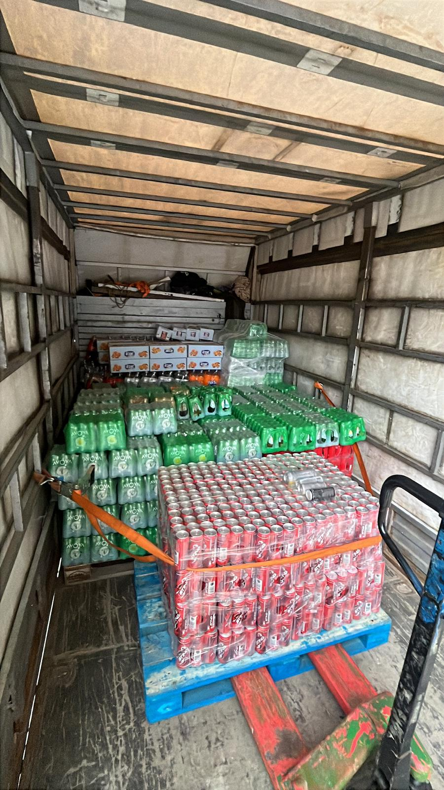
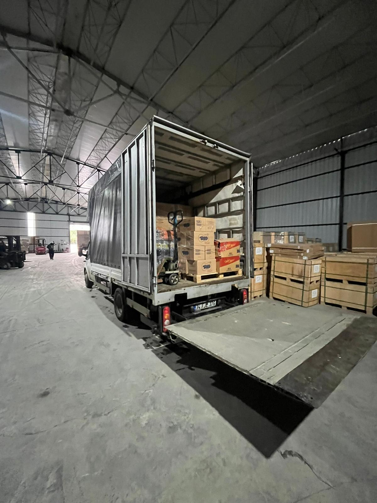
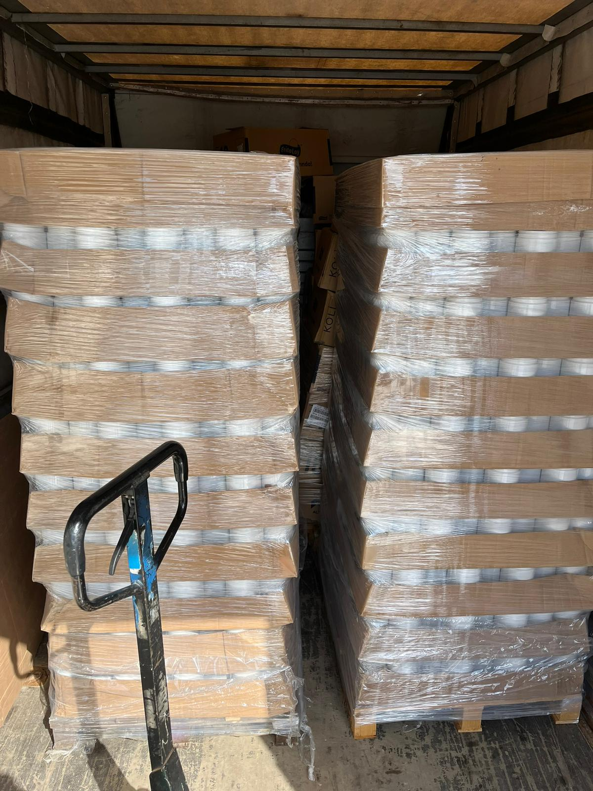
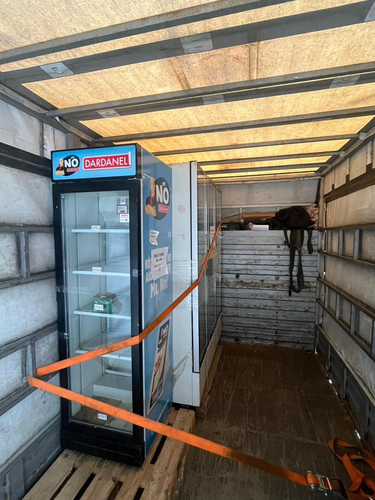
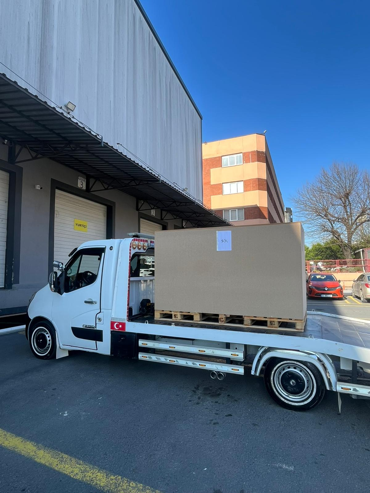
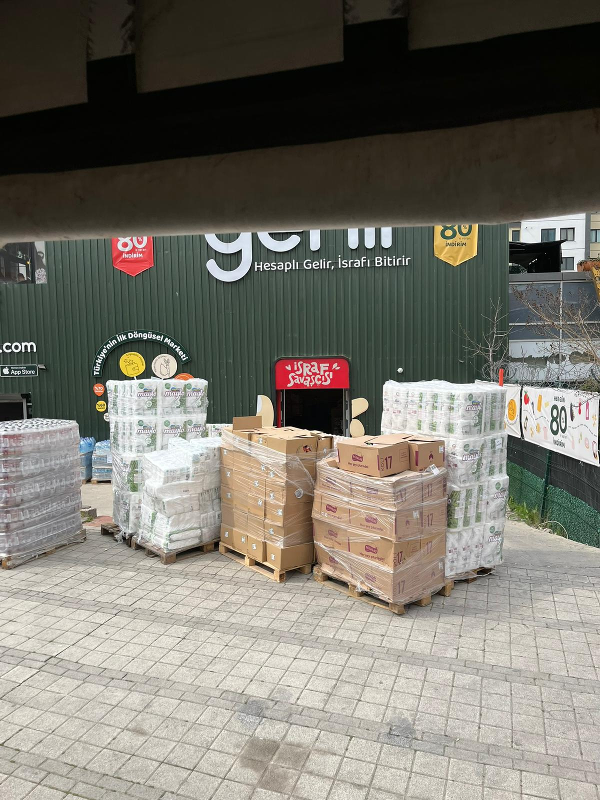

Şehir içinden şehirler arasına, parsiyelden dedike taşımacılığa kadar tüm lojistik ihtiyaçlarınız için buradayız.

İstanbul'un her noktasına hızlı, güvenilir ve ekonomik taşımacılık hizmeti sunuyoruz. Yoğun trafik ve karmaşık şehir yapısında bile zamanında teslimat garantisi veriyoruz.
Esnek araç seçeneklerimiz ve deneyimli sürücü kadromuzla küçük parsiyelden büyük yüklere kadar her ölçekte İstanbul içi taşımacılık yapıyoruz.

İstanbul başta olmak üzere Türkiye'nin dört bir yanına düzenli ve güvenilir şehirlerarası taşımacılık hizmeti sunuyoruz. Her türlü yükü zamanında ve hasarsız teslim ediyoruz.
Geniş güzergah ağımız ve modern araç filomuzla Türkiye genelinde kesintisiz lojistik bağlantı sağlıyoruz.

Kartal'daki güvenlik donanımlı depomuzda ürünlerinizi güvenle ve itina ile saklıyoruz. Kısa ve uzun dönem depolama seçeneklerimizle her ihtiyaca uygun çözüm sunuyoruz.
Tam kontrol ve takip imkânı sunan depolama altyapımız sayesinde stoklarınızı her an izleyebilirsiniz.

Tam araç doldurmayan yükleriniz için ekonomik ve pratik parsiyel taşımacılık çözümleri sunuyoruz. Küçük hacimli yükleriniz için tam araç kiralama yerine yalnızca kullandığınız kadar ödersiniz.
Düzenli parsiyel seferlerimiz sayesinde yükleriniz zamanında ve güvenle teslim edilir.

Özel araç tahsisiyle yükünüze özel, kesintisiz ve direkt taşımacılık hizmeti sağlıyoruz. Araç tamamen sizin yükünüze ayrılır; aktarma olmaz, gecikme olmaz.
Büyük hacimli, hassas veya acil yükler için dedike taşımacılık en güvenli ve en hızlı seçenektir.

Düzenli lojistik ihtiyacı olan şirketler için özel kurumsal lojistik planlaması yapıyoruz. Haftalık, aylık veya yıllık anlaşmalarla işletmenizin lojistik yükünü tamamen biz üstleniyoruz.
Esnek fiyatlandırma, öncelikli hizmet ve özel müşteri temsilcisi ile kurumsal müşterilerimize ayrıcalıklı deneyim yaşatıyoruz.
Özel talepleriniz için bizi arayın, size en uygun çözümü bulalım.
{kind=link}
{kind=link}
{kind=link}
{kind=link}
{kind=link}
{kind=link}